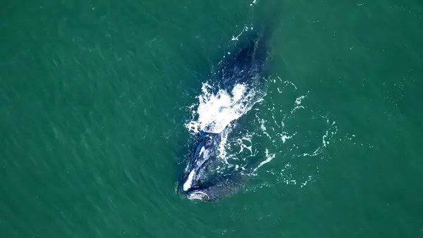
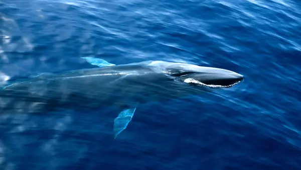
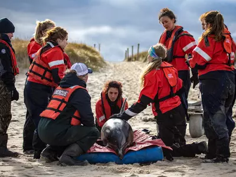

IFAW
Fresh thinking and bold action for animals, people and the place we
call home.
Join IFAW as a champion for animals.
Biodiversity Conservation
Project
We're transforming what it means to be a woman ranger
Room to Roam
A visionary approach to conservation in Africa
Blog
Bringing rhinos back to Manas National Park
Wildlife Rescue
Climate


Expert opinions
How wildlife conservation makes communities resilient to
the changing climate

Updates
Blog
Victoria’s shameful secret: the hidden crisis facing koalas
Blog
Rescuing the world’s smallest and most vulnerable bear species
Marine conservation



About us
Campaign
CEO cornerCampaign
Academy of Rescue and ConservationEvery problem has a solution.
Every solution needs support.
The problems we face are urgent, complicated, and resistant to change. Real solutions demand creativity, hard work, and involvement from people like you.